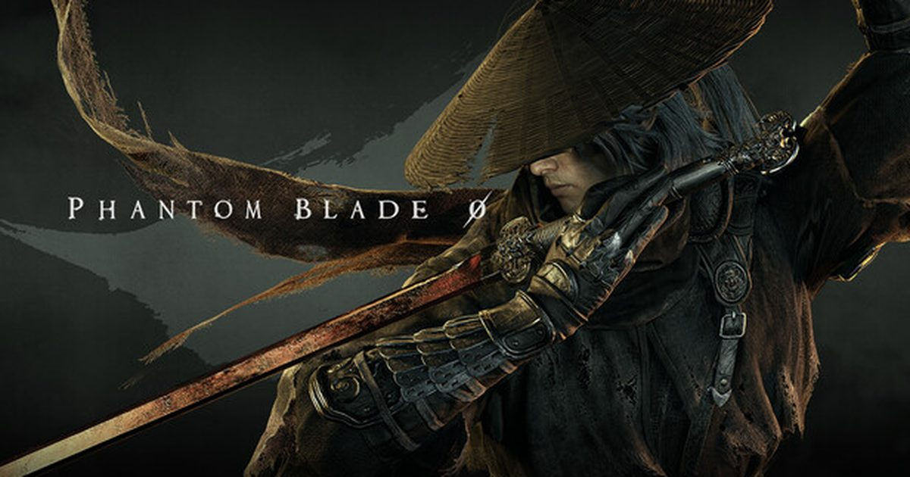

2026-08-18 · 新游观察
8 月 11 日晚（PT）/ 8 月 12 日早（北京时间），S-GAME 把《影之刃零》的 11 分钟实机、预购入口和「开发完成」一并甩了出来，发售日定在 10 月 29 日。这距离《黑神话：悟空》引爆全球刚好两年。我们聊聊，这款被拿来和悟空反复比较的武侠动作 RPG，到底有几分真功夫，又有几分是预告片的魔术。

先捋时间线，免得被各种日期绕晕。S-GAME 在 2025 年 TGA 上首曝，当时定档 2026 年 9 月 9 日；6 月 3 日制作人梁其伟发长文，把发售推迟 50 天到 10 月 29 日，理由写得很具体——升级角色模型、重做环境、并且「不想在知道还能再进一步时仓促出货」。8 月 5 日官宣开发完成（gold），8 月 11–12 日预购开闸，标准版 59.99 美元、数字豪华版 69.99 美元，登陆 PS5 与 PC（Steam、Epic）。一个细节：Steam 页面倒计时写的是 10 月 28 日，但开发商和索尼都说是 29 日——以 29 日为准。
为什么它值得专门写一篇？因为《黑神话：悟空》之后，「中国工作室能不能再做一款全球级动作游戏」成了真问题。《影之刃零》是目前离这个答案最近的一个——它背靠虚幻 5、有甄子丹、有 11 分钟连续实机，而且不是「播片」，是 Soul 从马车追逐一路打到悬崖坠落的开场段落。
1）战斗骨架：30+ 武器、20+「影刃」、没有体力条。 Soul 的武器库很野——关刀式长柄横扫清场、拳套近身高密连打、双蛇形短刃多段快刺，还有盾与电锯。配套的「Phantom Edges（影刃）」是 20 多种副武器/远程器械，用来重塑打法。最关键是「没有耐力条锁你」——它不鼓励你躲起来回血，而是逼你读招、弹反、精确闪避、反击来打断敌人节奏。打败特定 Boss 还能缴获对方的武器和招牌招式，塞进自己的连段里。这系统明显在喊「我是给通关了《只狼》《浪人》的人准备的」。
2）叙事钩子：66 天倒计时。 主角 Soul 被构陷杀害「秩序」首领，心脏受重创，只剩 66 天可活，要在被昔日同袍追杀的同时拆穿一个灭世阴谋。把「寿命」做成硬倒计时，天然制造紧迫感——你不是在开放世界里旅游，是在跟死神抢进度。主线 20–30 小时，支线会反哺叙事。
3）三个 Boss 的压迫感很"可读"。 预告里：一个被气改的武士，头顶尖刺装置会展开成旋转圆锯；一个雪山顶上使苗刀的白发刀客；一个被红线吊着的蛇形怪物（呼应早期宣传图）。梁其伟的原话很关键——团队用「最传统的游戏设计方法，避免自动化量产」，意思是招式是人手调的，不是程序生成的。这在 2026 年反而是稀缺声明。
4）甄子丹埋了三年。 预告最后揭晓：面具人 Mó Yuan 是 Soul 的父亲，由甄子丹负责面部与动作捕捉，且他自 2023 年起就是项目动作创意顾问。也就是说，从 2023 首曝、到 2025 的七星剑阵/醒狮/醉剑，每一段被反复拉片的武指，背后都有这位活着的动作巨星。藏了快三年才说，是自信的秀操作。
把两者摆一起看，比单纯吹更诚实。同： 都是中国工作室、虚幻 5、东方题材、全球同步发售、都背负「证明国产 3A 不是昙花」的期待；美术上都走「电影化打光 + 东方废墟」的路子。
异，而且关键： 悟空是「章节式箱庭 + 棍法 + 变身」，根子上是类魂的 Boss 轮转；《影之刃零》是「半开放世界 + 高速连段 + 无耐力条」，更接近《只狼》的弹反爽感叠加《鬼泣》的连招密度，梁其伟自己管这叫「功夫朋克（kungfupunk）」——传统武侠混一点脏兮兮的现代感。简单说，悟空赢了"文化震撼"，影之刃零想赢"手感"。它赌的是：看过悟空的人，会想再来一款"动作更黏手"的。
风险也明摆着。一是「半开放」不是无缝大世界，探索密度存疑；二是 66 天倒计时这种强叙事，若后期填不满坑会显短；三是它比悟空更依赖"战斗爽不爽"这一条腿——悟空还能靠西游情怀兜底，影之刃零的 IP 认知度低得多。10 月 29 日见真章，但预购前那句「不急着上车也行」是真心话。
我们的评分：8.4 / 10（基于实机观感，非终评）。 动作质感给高分，叙事与开放度留观察分。等 10 月 29 日首发评测再校准。
我们的观察： 11 分钟里最打动人的不是哪个 Boss，是「马车在雨里滚、Soul 在车顶砍人、最后连人带车坠崖」那一段——它把武侠的"写意"和动作的"写实"焊在了一起，这是很多西方动作游戏学不来的。
我们的观点： 中国 3A 不该只有"悟空一种答案"。影之刃零的价值，恰恰在于它走了一条不同的动作路数。哪怕它最后只拿悟空七成功力，也证明这条路能走通——这对整个行业比"又一款类魂"重要得多。
我们的案例对比： 《只狼》赢在"一招一式的生死"，《鬼泣》赢在"连段表演欲"，《影之刃零》想两头吃。它能不能吃下，取决于"无耐力条 + 影刃"这套是否真的好上手。手感这东西，文字分析等于零，得握着手柄才知道。
我们的实验： 把 11 分钟实机静音看一遍、再带声看一遍——静音版你仍能靠镜头和招式读懂"这人很强"；带声版甄子丹的配音一出来，角色分量立刻不同。结论：它卖的不只是系统，是"功夫"这个被欠了很久的沉浸感。
平台与价格： PS5、Steam、Epic 三端同步，标准版 59.99 美元、数字豪华版 69.99 美元（含先行解锁的 Treasure Basin 配件与 Legacy 服装）。Xbox 版暂未公布。另有 Fortnite 联动（第 7 章第 4 赛季 Gaming Legends 主题）在路上。
买不买预购： 如果你是《只狼》《悟空》《浪人》的重度动作党，且信梁其伟"手调战斗"的承诺，标准版预购风险可控——它已 gold，不会有跳票惊吓。如果你更吃叙事和探索，建议等 10 月 29 日首批评测，看"半开放"和"66 天"是否兑现再决定。
一句话总结： 《影之刃零》未必能复制悟空的破圈，但它大概率能证明一件事——国产动作游戏不只有"类魂"一条路。光是这一点，就值得在 10 月 29 日那天，给它一次开机。